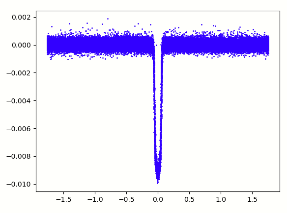

Projects
Photography Booking & Management System
PHP/SQL/HTML/Javascript
Coursework
09/2020-03/2021
View Work

The development of a complete booking system using SQL Databases. An overview of the features were account creation and secure login (hashing/salting+captcha) alongside booking and booking edit supported by card saving and encryption for future use. Company report generation and account edits alongside data repetition blocks where also required.
QMUL Python Exoplanet Hunting Programme
Python
Kepler Data Analysis & Graphical Manipulation
10/2019-03/2021
View Work

A program run by QMUL which involved the use of python to analyse and manipulate data from data sets using python libraries NumPy and matplotlib to accurately achieve a phase fold of a change in star luminosity from the Kepler mission, to later calculate the radius of the planet orbiting around it. This programme used the real data from the Kepler mission, resulting in the use of genuine data, being a great opportunity to expand on previous python knowledge and experience these 2 libraries.